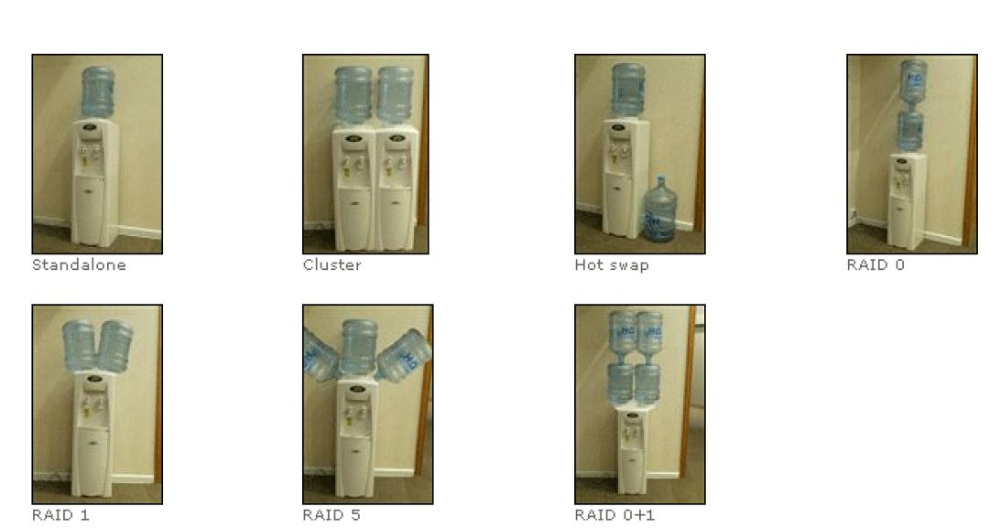

|
Телеграм группа для общения https://t.me/oracledba_net |

|
Работа над этой версией сайта остановлена. Рекомендуется обратиться к новой версии сайта oracle-dba.ru на котором в дальшейшем будут исправляться все ошибки и
неточности.
Доброго времени суток, уважаемые посетители сайта Oracle DBA!
На данном ресурсе собираются записи, связанные с администрированием баз данных Oracle и технологий тесно с ними связанными (Oracle DataBase, Weblogic, Oracle Golden Gate, etc.).
Записи могут содержать ошибки, по мере их нахождения и появления новых знаний, содержание будет корректироваться.
К сожалению не все материалы, могу опубликовать, поэтому на сайте размещены примеры достаточно общего характера.
Найдете ошибку пишите, исправим!
Критические замечания? Да пожалуйста, только нужен конструктив.
Pluralsight Oracle Courses
Beginner:
- Oracle Developer Essentials: Views, Synonyms and Triggers
- Oracle Developer Essentials: Data Types
- Oracle Database 12c Fundamentals
- Oracle PL/SQL Fundamentals - Part 1
- Oracle Database 12c Performance Tuning and Optimization
- Oracle Database 12c: Installation and Upgrade
Intermediate:
- Working with Collections in Oracle PL/SQL
- Oracle Developer Essentials: Tables and Indexes
- Oracle PL/SQL: Transactions, Dynamic SQL & Debugging
- SQL Data Wrangling in Oracle: Table Data
- Oracle Performance Tuning for Developers
- Oracle PL/SQL Fundamentals - Part 2
- Optimizing SQL Queries in Oracle
- Advanced SQL Queries in Oracle and SQL Server
- Oracle Database 12c Disaster Recovery and Data Movement
- Introduction to Dates, Times and Intervals in Oracle
+ InfiniteSkills - Learning Oracle 12c Training Video + Infinite Skills - Oracle 11g Real Application Cluster Training Video
Ищите на рутрекере.
Захотите разобрать примеры и поделиться результатами, пишите.
Каких материалов не хватает на сайте.
- Толковой интрукции по инсталляции Oracle в конфигурации Data Guard (StandBy)
- Скриптов развертывания Instance с заданными параметрами
- Информации о Oracle Restart (всегда обходились)
- Документ по инсталляции Oracle DataBase в Solaris
- Актуальной версии документа по восстановлению базы после потери файлов.
- Нужно больше информации по DataWarehousing.
- Чего-то еще?
Хочу поработать на каком-нибудь временном проекте, по внедрению / разработке решений на базе Java / Oracle / Weblogic, etc.
Подробнее здесь.
Oracle Database 12c Release 1 (12.1.0.1.0)
Вышла новая версия сервера баз данных.Oracle Database 12c Release 1 (12.1.0.1.0)

Скрипты для Oracle DBA
Посмотрите, может быть что-то полезное вы найдете и для себя.- https://github.com/bsrksg123
- https://github.com/fiesterovishwa12
- https://github.com/rohanrajkalra
Запрос который выведет инвалидные объекты с командами для их перекомпиляции
SELECT 'ALTER '||DECODE(OBJECT_TYPE, 'PACKAGE BODY', 'PACKAGE', OBJECT_TYPE)||' '||OWNER||'.'||OBJECT_NAME||' COMPILE '||DECODE(OBJECT_TYPE, 'PACKAGE BODY', 'BODY')||';' sqlTxt
FROM dba_objects
WHERE 1=1
and status = 'INVALID'
and owner in ('SCOTT','HR')
and object_type not like 'JAVA%'
Избыточность наглядно:
